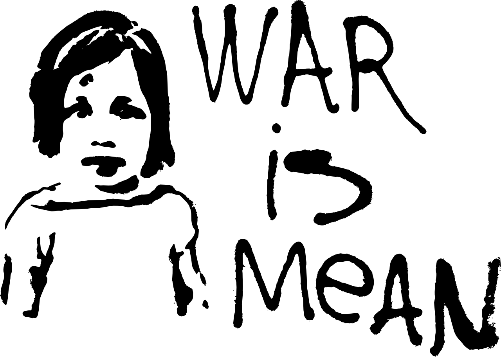
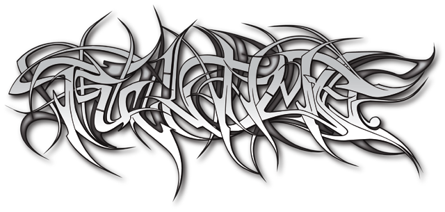

Street art kan defineres som kunst i gadebilledet, der er tilgængeligt for alle forbipasserende. Der findes mange forskellige typer af street art, f.eks. graffiti, stencil, tags, sticker art og skulpturer. Oprindeligt var street art også kendetegnet ved ikke at være sanktioneret af offentlige myndigheder eller kurateret af gallerier.
Graffiti som udtryksform kan spores helt tilbage til i 1920’ernes New York, men blev først rigtig populært i 1980’erne. Det var en periode med et spirende ungdomsoprør, hvor de unge uden tilladelse benyttede byen som lærred for at gøre opmærksomme på deres budskaber. Det resulterede i masser af graffiti og utæmmet kunst, der inden længe også vandt respekt i den ”voksne” kunstverden.
Synet på street art har derfor også ændret sig meget siden 1980’erne. Tidligere blev det betragtet som vandalisme, men nu kan man f.eks. finde et helt område på Roskilde Festival forbeholdt graffitikunst. Det gør, at tidligere ukendte graffitikunstnere nu kan blive kendte for det, de laver. Flere kunstner har også udgivet bøger og udstillet kunstværker på diverse gallerier udstillinger. Street art er altså gået fra at blive betragtet som noget beskidt og ulovligt, til at være anerkendt kunst.
Keith Haring var en amerikansk billedkunstner som var en pioner inden for street art. Hans enkle billedsprog og tekst stillede skarpt på kontroversielle spørgsmål som aids, narkotikamisbrug, ulovlig kærlighed og apartheid. Haring blev født i Reading, Pennsylvania, USA. Han var fra en tidlig alder interesseret i kunst, og studerede som ung grafisk design ved The Ivy School of Professional arts, en handel og kunstskole i Pittsburgh, Pennsylvania inden han drog mod New York.
Med stor inspiration fra af graffitimalerne vakte Haring omkring 1980 opsigt med sine kridttegninger i New Yorks undergrundsbane. Hans tegninger var enkle, og han malede dusinvis af tegninger om dagen foran folk som kom for at se ham. Haring banede vej for, at tilsyneladende enkle og ligefrem tegneserieagtige elementer af selvlærte eller mindre uddannede kunstnere kunne blive bredt værdsat. Senere spredte hans kunst sig til alt fra offentlige vægmalerier og natklubber til gallerier og museer over hele verden.
Banksy er en street artist, som er kendt for sine kontroversielle og ofte politiske tematiserede kunstværker. Banksy’s værker er karakteriseret af slående billeder, som ofte er kombinerede med et slogan. Hans arbejde inkluderer ting som satirisk kritik af krige, kapitalisme, hykleri samt grådighed. Der bliver I denne forbindelse, ofte benyttet illustrationer af rotter, aber, politimænd, medlemmer af den royale familie og derudover børn.
Udover hans todimensionelle arbejde, er Banksy kendt for hans installationskunst. En af de mest hyldede af disse kunstværker, var da han malede direkte ovenpå en levende elefant med et Victoriansk tapet mønster, som skabte en del oprør blandt dyreaktivisterne.
Morley er en gadekunstner fra Los Angeles, som specialiserer sig i typografi. Han blander humor og håb i et unikt perspektiv på selve livet. Morleys mål er at virke som en fremmed ven på gaden, der kommer med et venligt budskab, blandt alle de reklamer og kommercielle budskaber som ellers dominerer bybilledet.
Til forskel fra mere aggressive, barske og pessimistiske gadekunstnere, som laver politiske værker med det formål at påpege umenneskelige forhold i vores samfund og historie, så vælger Morley en anden fremgangsmåde for sine værker. Morley forsøger i højere grad at opmuntre forbigående med et stykke tekst, der skal give en opløftende følelse i hverdagen. Morley afbilder ofte også sig selv i sine værker. Det gør han fordi han mener, at det er med til at skabe et nært og mere personligt forhold til de personer, der stopper op og ser hans værker.
Når man taler om kunst og stilarter, så lægger man ofte fokus på særlige kendetegn som værkerne har til fælles. Men det er enormt svært med street art. Street art er nemlig et væld af forskellige udtryk: Fede graffitibogstaver, stencils i sort/hvid, farverige canvasser og meget, meget mere. De enkelte stilarter inden for street art kan måske karakteriseres individuelt, men som en helhed er der ikke nogle kendetegn. Street art skal snarere ses som en hyldest til den forskellighed, der er i både kunsten og samfundet. Street art har næsten altid noget på hjerte, uden man dog kan koge street art ned til at handle om enkelte, få emner. Street art kan berøre alt fra politik og religion til frihed og bandekonflikter, og forbudt kærlighed og miljøproblemer. Nogle af emnerne er globale, nogle er meget lokale. Der er omtrent lige så mange budskaber i street art som der er forskellige street art-kunstværker i byer verden over.
Tagging er den simpleste graffiti type. Den består af kunstnerens gadenavn i en enkelt farve, og er kort fortalt kunstnerens signatur. Tags laves med spraymaling, markers eller pens, og det anses for ekstremt respektløst at male henover en anden kunstners tag. Det karakteristiske ved Tags er den enkelte udførsel, et ord skrevet i én farve, med enten hårde eller bløde linjer. Tags er ofte noget der skal kunne laves hurtigt, og er derfor simple i designet.
En Stencil er en skabelon, som man kan bruge til at spraymale et billede med. Stencils giver kunstneren mulighed for at lave detaljerede værker på meget kort tid, fordi motivet er lavet hjemmefra. Stencils er ofte sort/hvide, og er ofte et velkendt billede af en berømt person, et kendt statement eller andet. Fx bruger gadekunstneren Banksy tit Stencils, gerne med politiske holdninger eller kritik af samfundet.
Wildstyle er en vild og pyntet form for graf ti skrift. Det er en svær og meget “stylet” form for skrifttype, som kan være svær at læse for “ikke-graftikunstnere”, men som er meget ot og kreativ. Wildstyle er ofte lavet i 3D, med mange skygger og farveovergange. Wildstyle består ofte af et navn med mange pile, pigge, kurver og vilde farver. Det er noget der træder frem i gadebilledet!
Street art omfatter en masse forskellige teknikker, heriblandt graffiti, stencils, og gadeskulpturer, og der er meget få be- grænsninger og tendenser i de tematikker som street art tager op. Det betyder naturligvis, at der er et enormt stort spænd i street arts kompositioner. Fælles er dog, at kunstnerne genbruger elementer som allerede findes i bybilledet.
Det er ikke unormalt, at mange af samme farver bruges i en stilart, men sådan forholder det sig ikke i street art. Alle farver kan i princippet bruges. Ofte vil kunstneren dog vælge noget som fanger blikket og skaber opmærksomhed, enten noget meget farverigt eller noget som står tydeligt i sort/hvid. Værket vil også ofte have et klart omrids, så det er lettere at få øje på.